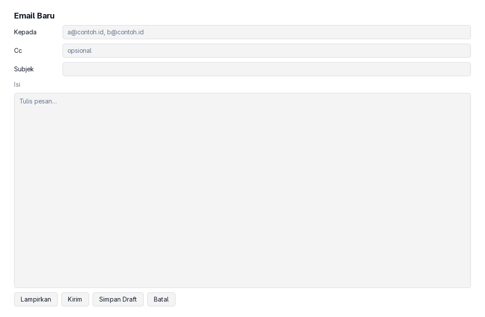

Antarmuka 3-pane native
Sidebar folder multi-akun, daftar pesan tervirtualisasi untuk ribuan email, dan panel baca teks bersih dengan tautan aktif serta fallback buka di browser.
Karta menggambar antarmuka 3-pane langsung lewat GPU, dalam satu binary Go tanpa browser tertanam. Memori di bawah 30 MB, pencarian lokal instan, tetap bisa dibaca offline, dan semuanya bisa dikendalikan dari keyboard.


Sidebar folder multi-akun, daftar pesan tervirtualisasi untuk ribuan email, dan panel baca teks bersih dengan tautan aktif serta fallback buka di browser.
Indeks teks penuh SQLite FTS5 menelusuri subjek, pengirim, penerima, dan isi pesan secara lokal. Arsip email tetap bisa dibaca saat jaringan terputus. Diukur 27 ms pada 10.000 email — lihat benchmark.
Koneksi IMAP IDLE mendorong pesan baru begitu tiba, dilengkapi cadangan polling berkala dan reconnect otomatis untuk akun IMAP maupun Gmail.
Masuk akun Gmail langsung dari aplikasi tanpa membuat kredensial OAuth sendiri. Token dan kata sandi tersimpan aman di OS Keyring, bukan di database lokal.
Kata sandi dan token OAuth disimpan di keyring sistem operasi, bukan di file konfigurasi maupun database SQLite.
Pesan, indeks pencarian, dan lampiran tersimpan lokal. Tidak ada server perantara yang membaca email Anda.
Anda cukup menambahkan akun IMAP atau Gmail sendiri. Relay OAuth hanya menukar kode login Google dan tidak menyimpan apa pun.
Seluruh kode ada di GitHub di bawah lisensi MIT, termasuk skrip instalasi dan relay OAuth.

curl -fsSL https://raw.githubusercontent.com/dchya24/karta/master/install.sh | bashirm https://raw.githubusercontent.com/dchya24/karta/master/install.ps1 -OutFile install.ps1; .\install.ps1
Ingin memeriksa dulu? Baca skripnya di install.sh atau install.ps1 sebelum menjalankannya. Lebih suka memasang manual? Unduh paket .deb, .rpm, .dmg, atau installer .exe langsung di halaman Releases.